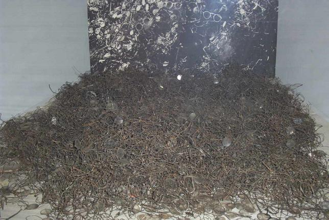
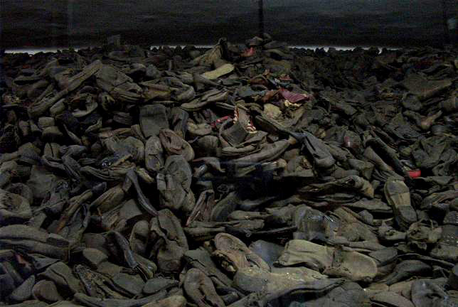

The Auschwitz Museum houses collections of suitcases, clothes, religious items, toiletries and, as shown here, thousands of eyeglasses and shoes – a vivid reminder of the more than one million innocent victims whose bodies are nowhere to be found in the premises because, of course, they were incinerated.


Back to Auschwitz
Back to Birkenau
Back to the Homepage